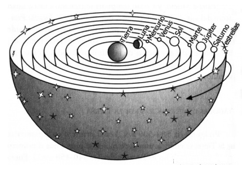

Pitágoras y la Astronomía

Pitágoras y la Astronomía
Se dice que Pitágoras descubrió que la tierra era redonda, un globo que gira junto a otros planetas alrededor de un fuego central; las cinco zonas climáticas, cuya identificación depende del descubrimiento de la oblicuidad de la eclíptica; y la identidad de la estrella vespertina y matutina, es decir Venus. También creo la teoría de “La Música de las Esferas”, una relación de los cuerpos celestes y la vibración que producen sus órbitas, como parte de la armonía del Universo.
Sin embargo, se dice que algunos de esos descubrimientos ya habían sido conocidos por los Babilonios siglos antes. A continuación, un video sobre la Música de las esferas: https://www.youtube.com/watch?v=bxpSeI7fRbs
- Actividad No 6. Preguntas para Lectura Activa
-
- ¿Qué descubrimientos astronómicos hicieron los pitagóricos?
- ¿Qué es la Música de las Esferas?